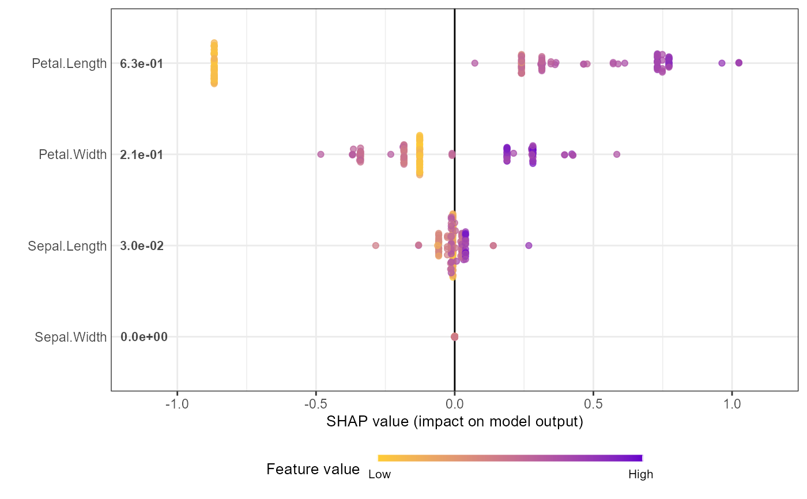
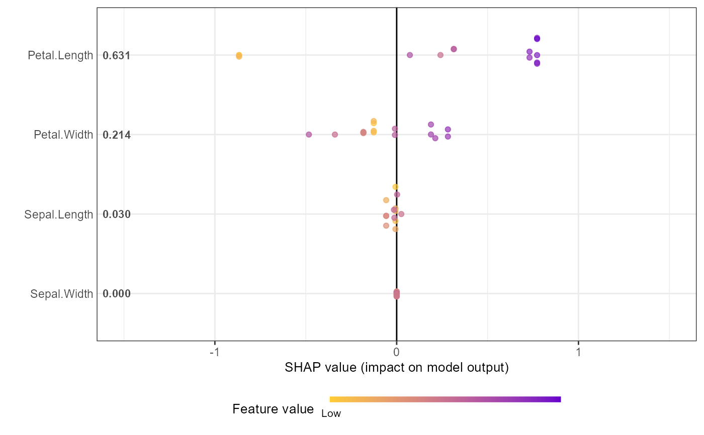
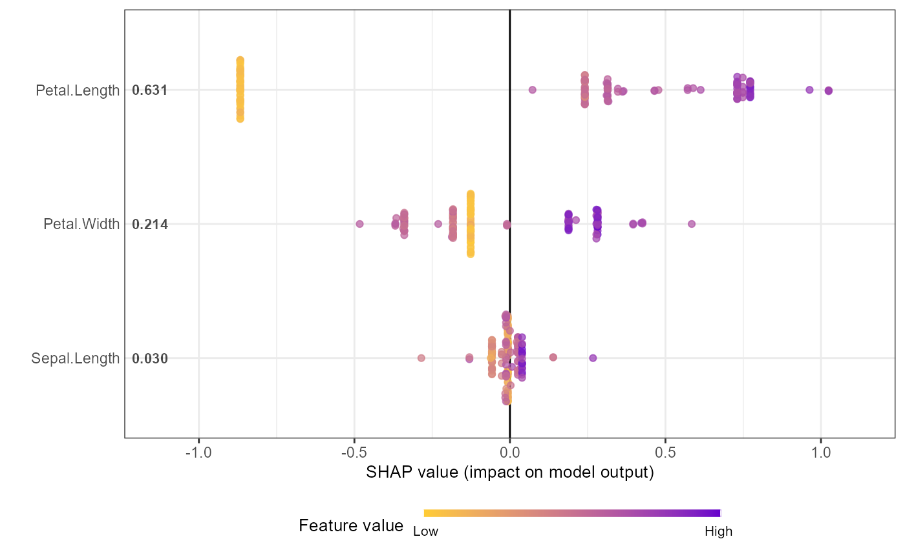
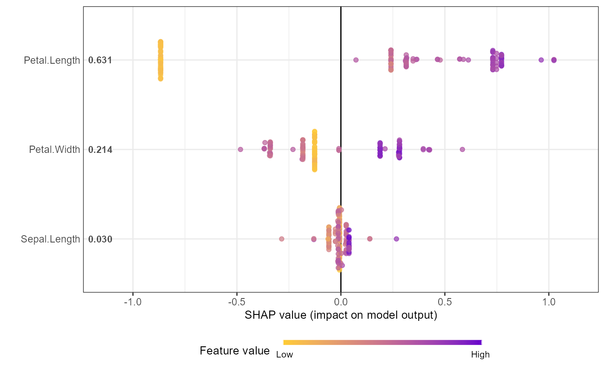
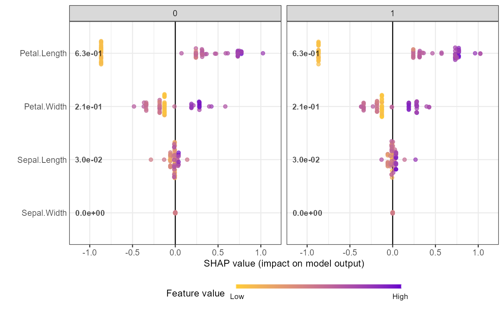

Produces a data.table with 6 columns: ID (observation identifier), variable
(feature name), value (SHAP value), rfvalue (raw feature value), stdfvalue
(standardized feature value for coloring), and mean_value (mean absolute SHAP
value per feature). See shap_long_iris for an example.
Arguments
- xgb_model
an XGBoost or LightGBM model object (will derive SHAP values from it)
- shap_contrib
optional: a matrix of SHAP values (without baseline column). If supplied, will use these values instead of computing from
xgb_model- X_train
the predictor matrix used to calculate SHAP values (required)
- top_n
number of top features to include, ranked by mean|SHAP| (default: all)
- var_cat
optional: name of a categorical variable for grouped/faceted plots
Details
The ID variable (1:nrow(shap_contrib)) is added to track each
observation before converting to long format.
Examples
# Example: Basic workflow for SHAP summary plot
# Note: For xgboost 3.x, use xgb.DMatrix + xgb.train, and convert factor labels to numeric
data("iris")
X1 = as.matrix(iris[,1:4])
y1 = as.numeric(iris[[5]]) - 1 # Convert factor to numeric
dtrain = xgboost::xgb.DMatrix(data = X1, label = y1)
params = list(learning_rate = 1, min_split_loss = 0, reg_lambda = 0,
objective = 'reg:squarederror', nthread = 1)
mod1 = xgboost::xgb.train(params = params, data = dtrain,
nrounds = 1, verbose = 0)
# Get SHAP values and feature importance
shap_values <- shap.values(xgb_model = mod1, X_train = X1)
shap_values$mean_shap_score # Ranked features by mean|SHAP|
#> Petal.Length Petal.Width Sepal.Length Sepal.Width
#> 0.6307042 0.2135736 0.0300757 0.0000000
shap_values_iris <- shap_values$shap_score
# Prepare long-format data for plotting
shap_long_iris <- shap.prep(xgb_model = mod1, X_train = X1)
# Alternative: use pre-computed SHAP values
shap_long_iris <- shap.prep(shap_contrib = shap_values_iris, X_train = X1)
# SHAP summary plot
shap.plot.summary(shap_long_iris, scientific = TRUE)

shap.plot.summary(shap_long_iris, x_bound = 1.5, dilute = 10)

# Alternative options:
# Option 1: directly from xgboost model
shap.plot.summary.wrap1(mod1, X = as.matrix(iris[,1:4]), top_n = 3)

# Option 2: from pre-computed SHAP values (useful for cross-validation)
shap.plot.summary.wrap2(shap_score = shap_values_iris, X = X1, top_n = 3)

# Example: Using var_cat to group by a categorical variable
# The var_cat argument creates grouped long-format data for faceted plots
library("data.table")
data("iris")
set.seed(123)
iris$Group <- 0
iris[sample(1:nrow(iris), nrow(iris)/2), "Group"] <- 1
data.table::setDT(iris)
X_train = as.matrix(iris[,c(colnames(iris)[1:4], "Group"), with = FALSE])
y_train = as.numeric(iris$Species) - 1 # Convert factor to numeric
dtrain = xgboost::xgb.DMatrix(data = X_train, label = y_train)
params = list(learning_rate = 1, min_split_loss = 0, reg_lambda = 0,
objective = 'reg:squarederror', nthread = 1)
mod1 = xgboost::xgb.train(params = params, data = dtrain,
nrounds = 1, verbose = 0)
# Use var_cat to create faceted plots by Group
shap_long2 <- shap.prep(xgb_model = mod1, X_train = X_train, var_cat = "Group")
shap.plot.summary(shap_long2, scientific = TRUE) +
ggplot2::facet_wrap(~ Group)
